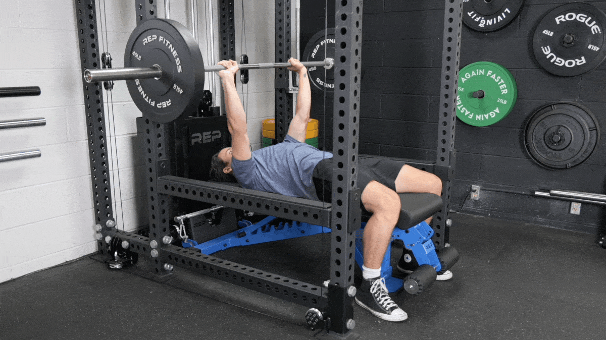
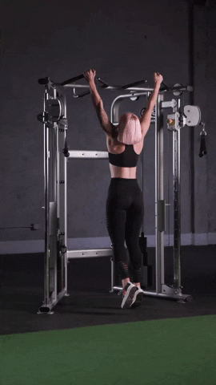
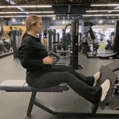
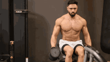
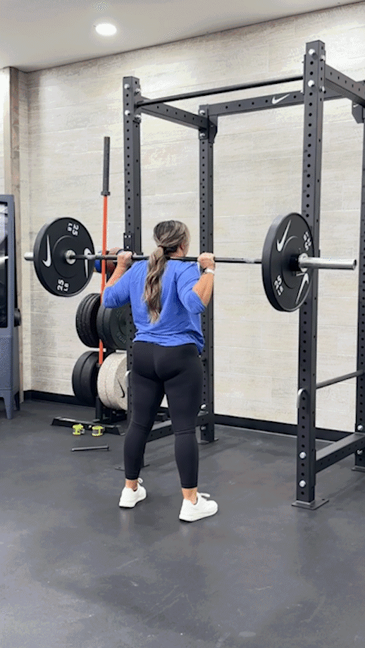
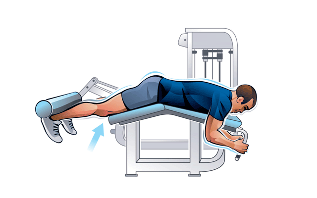
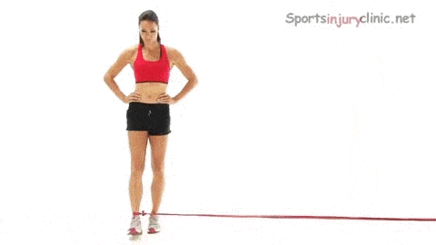
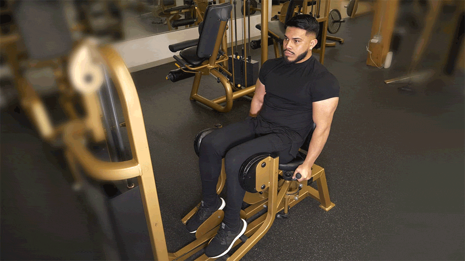

Pushup

The pushup is a classic bodyweight exercise that targets the chest, shoulders, and triceps.
Barbell Press

The barbell press, also known as the overhead press, is a compound exercise that targets the shoulders and triceps.
Cable Flies

Cable flies are a great isolation exercise for the chest, focusing on stretching and contracting the pectoral muscles.
Pull Ups

Pull-ups are a compound exercise that targets the upper back, arms, and shoulders.
Lat Pulldown

The lat pulldown is a machine exercise that primarily targets the latissimus dorsi muscles of the back.
Cable Rows

Cable rows are a great exercise for building back strength and muscle mass.
Lateral Raises

Lateral raises target the deltoid muscles of the shoulders and are great for building shoulder width.
Military Press

The military press is a compound exercise that primarily targets the shoulders and triceps.
Tricep Pulldown

Tricep pulldowns isolate and target the triceps muscles for strength and definition.
Bicep Curls

Bicep curls are an essential exercise for building and strengthening the biceps muscles.
Barbell Squat

Barbell squats are a compound exercise that targets the quadriceps, glutes, and hamstrings.
Lunges

Lunges are a unilateral leg exercise that strengthens the quadriceps, hamstrings, and glutes.
Leg Extension

Leg extensions target the quadriceps muscles and are commonly used in leg workouts.
Deadlift

The deadlift is a compound exercise that targets the posterior chain, including the hamstrings, glutes, and lower back.
Good Mornings

Good mornings are a compound exercise that primarily targets the lower back and hamstrings.
Leg Curls

Leg curls isolate and target the hamstrings, helping to develop strength and definition in the back of the thigh.
Split Squats

Split squats are a unilateral leg exercise that targets the quadriceps, hamstrings, and glutes.
Hip Thrust

Hip thrusts target the glutes and hamstrings and are great for building strength and power in the hips.
Hip Abduction (Bands)

Hip abductions with bands target the outer thighs and hips, helping to strengthen and tone the hip muscles.
Hip Abduction (Machine)

Hip abductions using a machine isolate and target the outer thighs and hips, aiding in hip stability and strength.